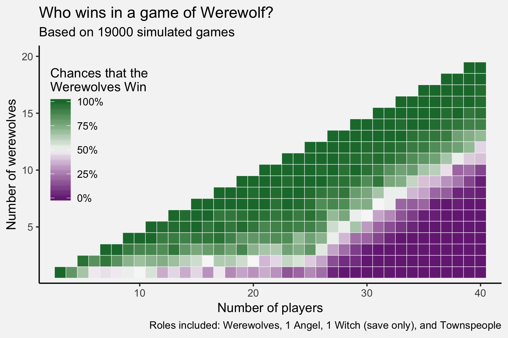

I really enjoy the party game called Werewolf. When I was an undergrad, I played it many, many times but unfortunately, I haven’t had a chance to play it for several years. After successfully simulating an easier game like Chutes and Ladders a few weeks ago, I thought I’d try moving on to something more difficult. Here are the results of a bunch of simulations of simple Werewolf games.
What is Werewolf?
Werewolf is a party game, ideally played with about 10–15 people sitting in a circle, plus one narrator. Usually with the help of regular playing cards, the narrator distributes roles to each person, which they keep secret. The simplest game has two roles: werewolves and townspeople. For the werewolves, the goal of the game is to eliminate as many townspeople as possible. The townspeople’s goal is to eliminate all the werewolves.
The game proceeds in alternating phases. First, in the “nighttime” phase, all players start by closing their eyes. The narrator then “wakes” the werewolves and they collectively, but silently, indicate to the narrator who they “attack” that night. If you have additional roles in use, they, one at a time, wake up and do other actions like pick someone to save from a werewolf attack or some other action.
When all the nighttime events have finished, the game moves on to the “daytime” phase. Everyone can open their eyes and the narrator informs everyone the results of last night’s events. In a simple game, it just means everyone finds out who the werewolves attacked. That player “dies”, reveals their role to everyone, and are eliminated from the game. Everyone then holds a “town hall” meeting and vote on who they should eliminate, under the guise of “hey everyone, there are werewolves among us, let’s kill the person we think is most suspicious.” The werewolves of course participate in this town hall event while hiding their identities. When a person is voted out, they also “die”, reveal their role, and are eliminated.
This nighttime-daytime cycle repeats until one of the game over conditions are met. The werewolves win if they equal or outnumber the non-werewolves. Everyone else wins if the werewolves are eliminated. It’s a fun game.
Simulating Werewolf
I’ve tried half a dozen times to write a computer program to do Werewolf. When you’ve got 15 players, each with their own unique roles and abilities, working out the logic of interacting events can get tricky. I’ve always wanted to write an iPhone app or something that would be the perfect tool for the narrator to help figure out what all happened. As it turns out, for being such a simple game conceptually, I’ve found it quite difficult to program (with my limited programming abilities).
I had a lot of fun simulating Chutes and Ladders, so I thought I’d try simulating Werewolf. In all the previous versions, I’ve tried the narrator’s tool approach to programming it, but it ended up being simpler to program a simulation rather than a tool for a live game. The benefit of this completely automated game is that I can wrap it up into a loop and run it many times.
I won’t describe the code in this post because it’s a little complicated. Perhaps overly complicated for the simple version of the game that I have now, but I’m anticipating more types of roles in future versions, so I’m leaving room to add those in later. But you’re welcome to look at the code yourself on my Github.
The simplest game: werewolves and townspeople
The main thing I wanted to determine with these simulations was what the ideal ratio of werewolves to townspeople is in a game. Normally when I play in real life, I shoot for somewhere between 1 for every 3–4 players, depending on what other roles are being used and how many people are playing.
So, I started the simulation with the simplest possible game and included just two roles: werewolves and townspeople. The parameters of the simulation that I could modify were how many players are playing and how many of those players were assigned a werewolf role. The largest game I’ve participated in was 22 people, but since this is a computer, I thought I’d try much larger groups. So I simulated games as small as three players to monster 40-person groups. For the number of werewolves, they ranged from 1 to 20.
As I looked through the simulations, there was kind of a lot variation as far as how long the game lasted, and in some cases, what side won. So I ran more and more games per combination of players and decided that with about 50 games I could get a reasonable estimate of how often each side won. I can get about 9 games per second with the current code, so it takes about 35 minutes to run all of them. I could run it overnight I suppose to get more simulations, but I figure 19,000 total games was sufficient.
So, here are the results of those simulations! This first plot shows the results of 19,000 games with just werewolves and townspeople:

There are lots of interesting things to notice here. First, for groups less than about 27 people—which is pretty much any in-person game you’d ever play—just a small number of werewolves are needed. Surprisingly, in a group of 10 people, if you have just one werewolf, that player’s got a 50-50 shot at winning. Pretty impressive. That ratio of approximately 1 in 10 continues until about 27 people. At that point—for some reason unknown to me—it changes drastically and you need about 1 in 3 players to be werewolves for it to be an even game.
So, let’s say you’ve got a group of four people (other than the narrator) that wants to play. If just one person is a werewolf, it’s a fair game. But, if twenty-two of your closest friends come to join, just two of them should be werewolves to keep the odds the same. But then, if another twelve people join, you’d need to make eight of them werewolves to keep the odds the same. What the heck??
Add the Angel
Okay, so it’s not a lot of fun when the werewolves to have such good odds in small groups. So, for this reason, additional roles are added to the game to help the townspeople’s side. The most basic one is the Angel. After the werewolves have selected their victim, the Angel then “wakes up” and chooses someone to protect that night. That person is saved from werewolf attacks. The Angel is on the townspeople’s team when it comes to winning the game, so ideally, the odds that the townspeople win should go up when the Angel is included in the game.
Here are the results:
For the most part, the results are very similar. It’s hard to tell when the two plots are displayed separated from each other here, but if you could quickly toggle between them, most of the white squares shift over to the left about one unit. That means that if one of the townspeople is an Angel, you’d need one fewer total people to make it a fair game. In other words, the Angel is like having two townspeople. (Of course if the Angel gets attacked by the werewolves early on, then you’re toast.) Furthermore, a lot of the dark green squares are a little less dark, meaning the Angel does help the townspeople win a little bit more often even when the odds are against them.
But the effect is quite small. I thought the Angel would be a little more helpful, but I guess not.
Add the Witch
The last role I’ve programmed so far is the Witch. The first of the Witch’s two powers is a saving spell. After the werewolves have made their attack, and if the Angel hasn’t already saved them, the Witch is told who is about to die. If they want, the Witch may save that person—but they can only do so once per game. Additionally, they also have a kill that they can use once per game, but I haven’t programmed that in yet. The Witch is on the townspeople’s side, so they should aim to use their kill on a werewolf.
So, in a real game, the Witch uses their save wisely. They usually don’t use it the first round and will most likely use it when they have a good reason to save that person. I can’t program all the gut feelings and stuff that go into the game, so I simply made it so that the Witch uses their power 33% of the times they have the opportunity to. So, it doesn’t always get used each game.
Anyway, here are the results of a game that includes some number of werewolves, one Angel, one Witch, and the rest as townspeople:

So, very close to the same as the previous plot. The Witch’s save really doesn’t change the odds all that much. There are ways that I could program it better: like they would automatically use it if they know they’re going to be killed, or the odds of using it increase the further along in the game they are. Maybe if I add this in, their effect will be stronger.
Conclusion (for now)
So overall, it seems like the werewolves are pretty dang powerful. I read somewhere though that simulations don’t do an adequate job at capturing real-life game behavior. Trusting gut feelings and learning to read others’ behavior and body language is where the fun happens. The vote as it is now, is just chosen at random. In real life, the werewolves rarely vote off their own. Plus, the Witch gains some information each night when they’re told who’s about to get attacked because they know that person is not a werewolf so they’d probably not vote that person off down the road if that person survives. I’d to program some that in, but it gets real complex really quick.
I’ll continue working on this in my spare time. With every additional role, it gets quite a bit more complicated. This is partly because new roles do additional things that I haven’t coded for yet, things besides just saving and killing. Also, as more roles are added, the number of combinations and obscure hypothetical increases: what happens if someone is targeted by the werewolves, saved by the Angel, and then killed by the Witch?